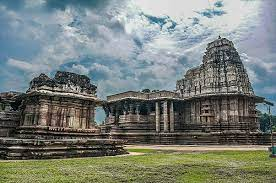
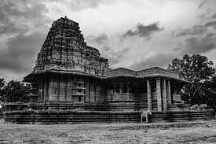
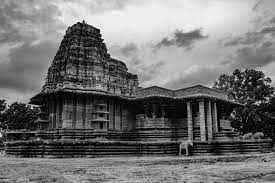
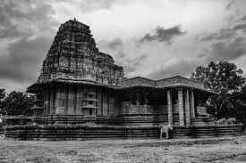

2. Ramappa Temple

 


During the period of the mighty Kakatiya ruler Ganapati Deva, General Recherla Rudra Reddy built this magnificent Shiva temple for Lord Ramalingeswara. The structure of the temple is unique – built on a star shaped pedestal which is close to 6-7 feet high. It is said that due to its beautiful star-shaped structure, Marco Polo lauded this temple as “the brightest star in the galaxy of temples”. The aura of the temple is overwhelming specially when visited early morning. The sprawling garden around the temple is very well-kept and there are lot of eateries outside of the temple premises for visitors.